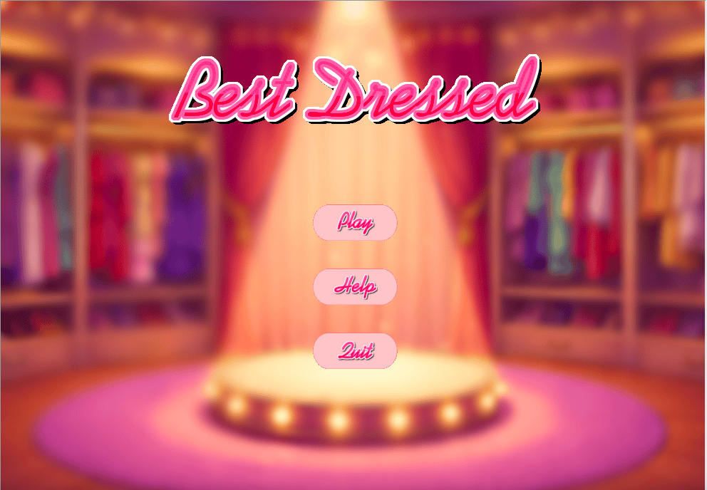
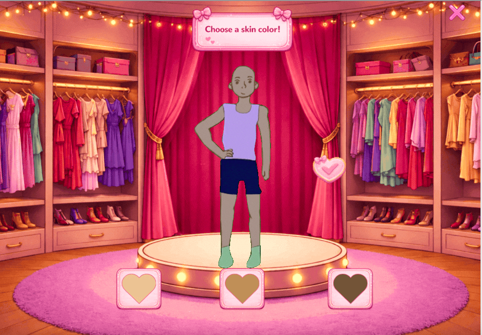
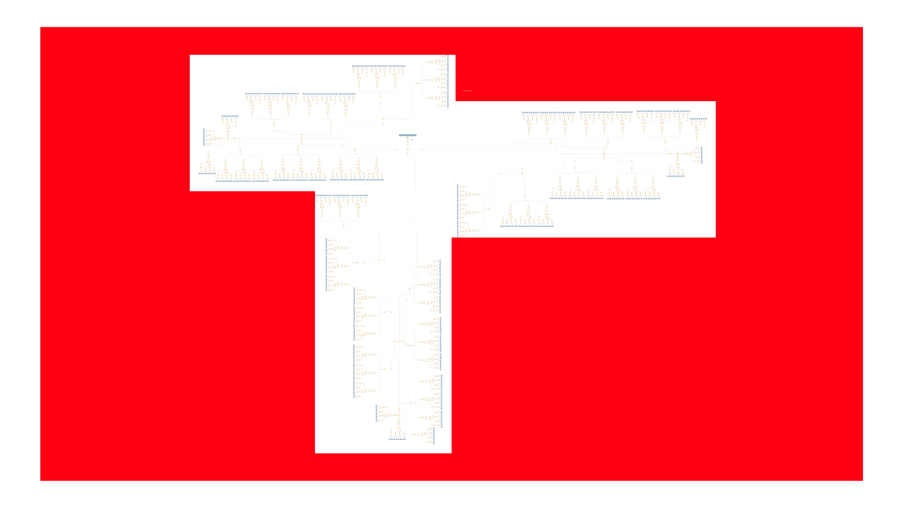
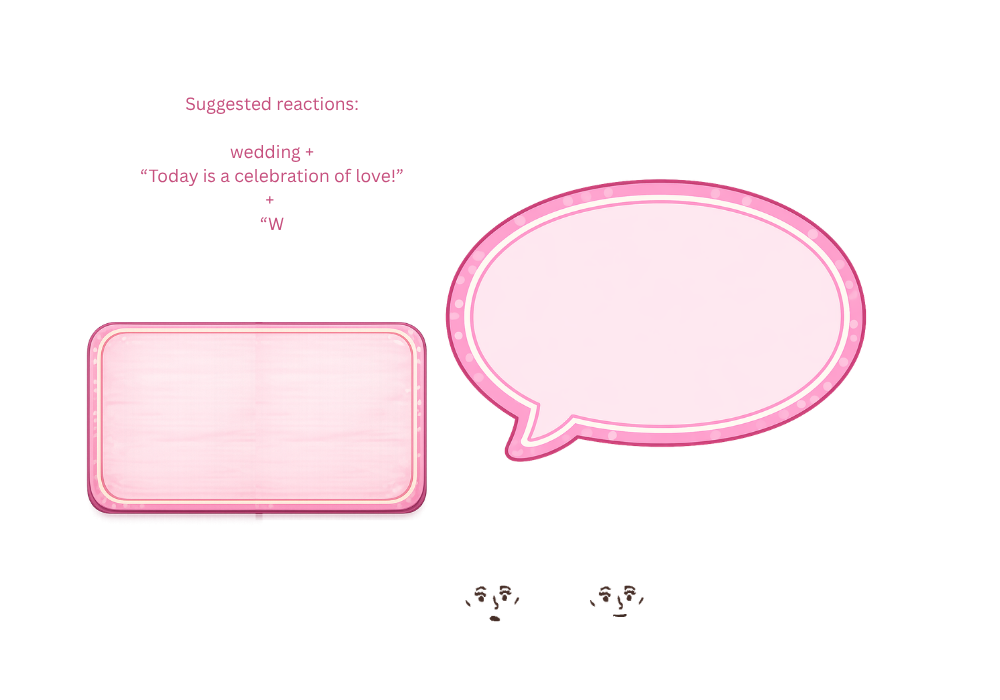
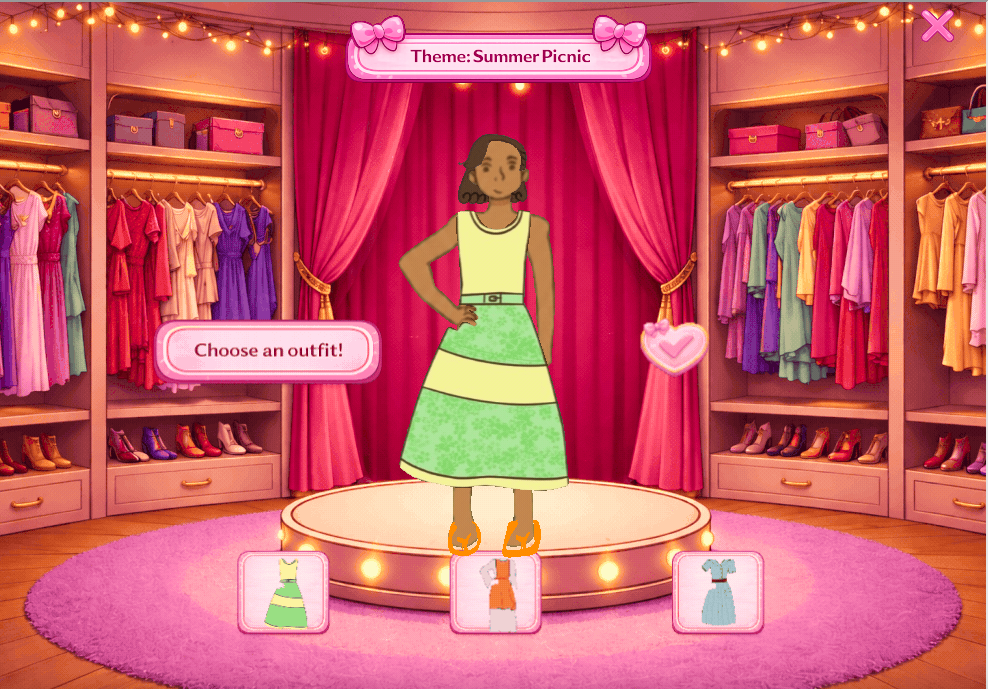
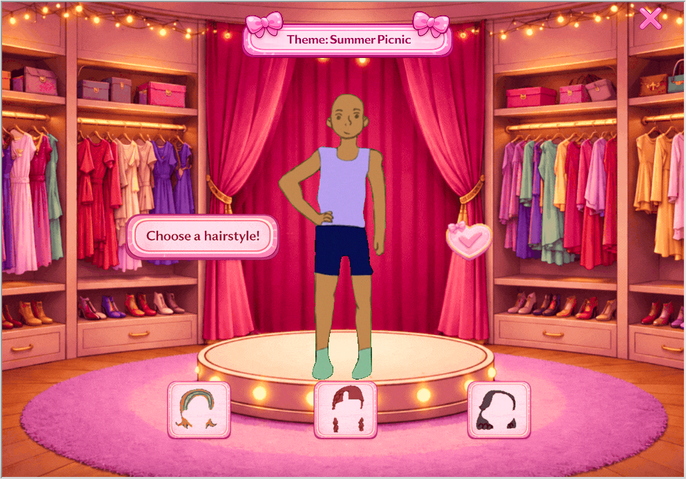
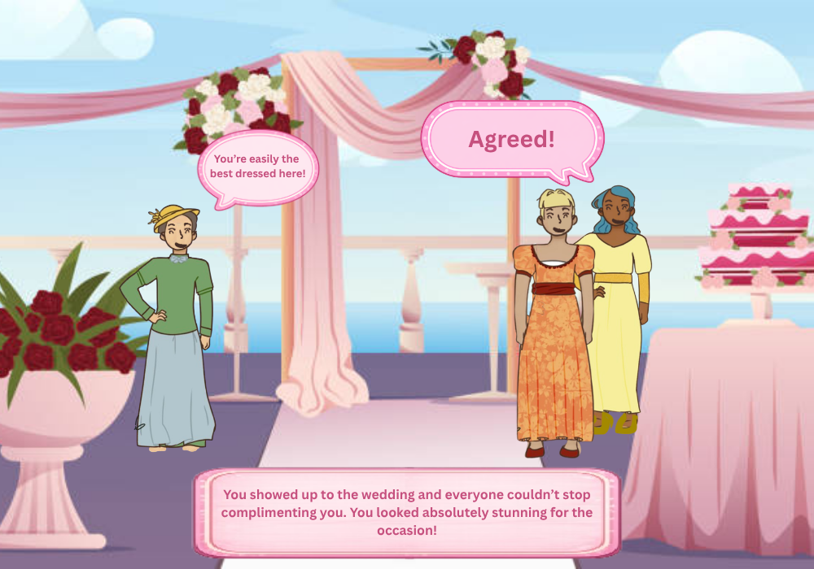
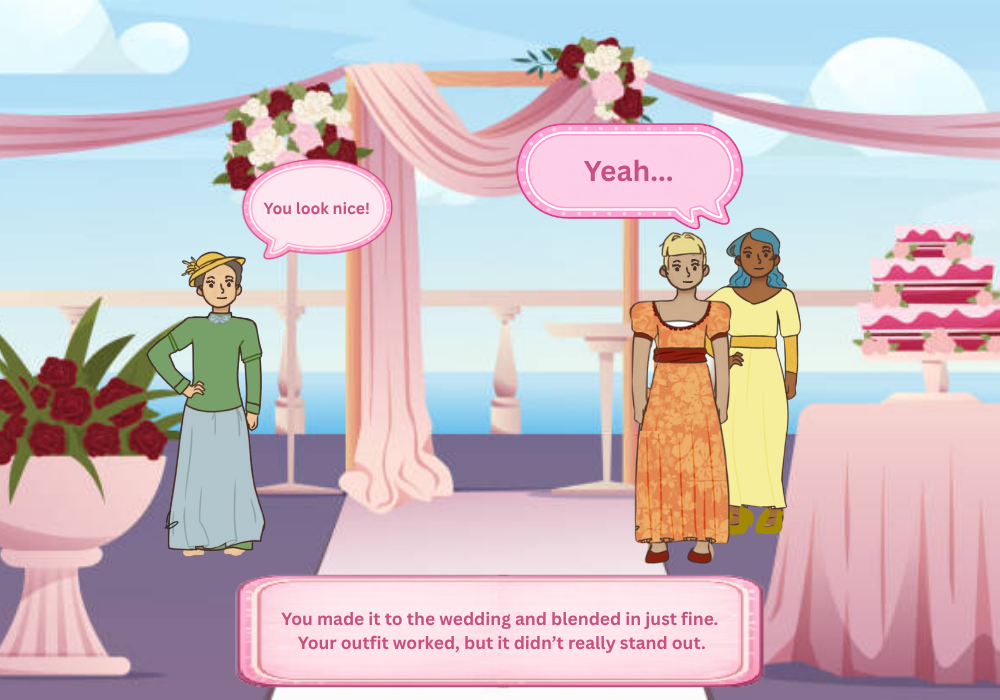

Best Dressed
A create-your-own-adventure dress-up game demonstrating logic tree structures in Python. Players style an outfit, choose their hair, shoes and accessories for a randomly assigned theme (wedding, night out, or picnic) and receive an ending based on their score.
Purpose & Context
Built for a Programming class to demonstrate understanding of logic tree structures in Python. The project translates a branching decision system, where each sequential choice narrows the path and accumulates a score, into a playful, visual experience using Pygame. Designing the scoring logic required thinking carefully about user decision flows, a skill directly transferable to UX work.
Logic Tree Structure
The game's core is a branching logic tree. Each player choice (gender, skin tone, hair, outfit, shoes, accessories) is a node with weighted outcomes. Choices are evaluated against the randomly assigned theme (wedding, night out, picnic) and a score is accumulated. The full logic tree diagram and a zoomed detail of one branch are shown below.
How It Works
Players begin at a start screen with background music. After clicking Play, they choose a skin tone and confirm. A random theme is assigned. The player makes four sequential selections, hair, shoes, outfit, and accessories, each confirmed with a checkmark. Each choice carries a point value relative to how well it matches the assigned theme. A short intermission screen appears before the final outcome is revealed.
Game Assests and Design Process
The dressing room background, outfit selection UI, and ending scenes were key design artifacts. Below are process images showing the outfit selection stage, and the positive and negative ending scenes for the wedding theme with background illustrations created by Michelle Parson and Michelle Ren to communicate outcome tone without relying on text alone.
View Project Media









Endings & Scoring
The cumulative score across all four choices determines which of three endings the player receives: Good, Neutral, or Bad. Each ending has a themed screen with corresponding music, creating a complete narrative loop. Players can click Play Again to restart with a new random theme.
Credits
UI elements and dressing room/intermission backgrounds were generated using DALL-E. Character designs, outfits, and ending scene illustrations were created by Michelle Parson and refined by Michelle Ren. Permission was obtained from Juiice on Tumblr for use of character designs. Audio files sourced from open-use libraries; in-game background music produced by Kristian Davis.
View Source Code
Requires Python 3 + pip install pygame-ce
Methods & Tools
- Python
- Pygame-CE
- Logic Tree Structures
- Adobe Illustrator
- DALLE-E (asset generation)
- Canva Pro
- UX Design
Outcomes
- Playable desktop game
- Branching score system
- Original charachter illustrations
- Themed audio experience
- Project Management Plan
Program Objectives
- Use turtle to display an introduction/background of the game for the user.
- Display a character, have the user choose the gender, skin color, and hair.
- Display randomized theme; display customized character in fashion looks; give user a fashion choice.
- Match the fashion choice to a success outcome which gives a win/lose outcome based on the theme.
Dependency Flow
- Setup
- ↓
- Plan Game Structure
- ↓
- Create Assets
- ↓
- Turtle Screen Setup
- ↓
- Clickable Option System
- ↓
- Display Option Buttons
- ↓
- Category Flow
- ↓
- Scoring Systems
- ↓
- Ending Logic
- ↓
- Ending Screen
- ↓
- Reset / Play Again
- ↓
- Testing & Debugging
- ↓
- Final Revisions